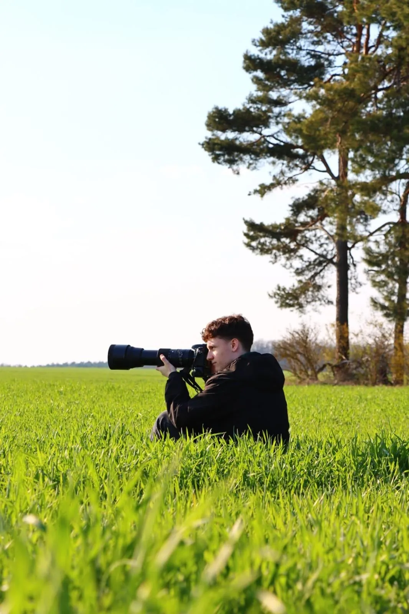
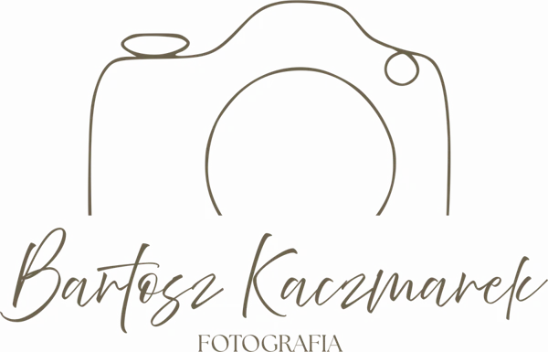

O mnie
Trochę o mnie
Fotograf eventowy — zdjęcia, które pozwalają wrócić do ważnych chwil.


Chyba najlepsze zdjęcia powstają wtedy, gdy się ich właściwie nie planuje.
Pracując jako fotograf imprez, przede wszystkim chcę pokazać prawdziwe chwile — takie, jakie naprawdę mają miejsce. Staram się zatrzymać energię, ruch i uczucia, które towarzyszą wydarzeniu, żeby nawet po długim czasie można było do nich wrócić, przeglądając zdjęcia.
Robię to z zaangażowaniem i wyczuciem, bo nie chcę, żeby jakakolwiek ważna chwila umknęła mojemu obiektywowi. W końcu to właśnie te momenty często zostają w pamięci na zawsze.
Naturalne kadry zamiast pozowania
Dyskretna praca podczas imprezy
Zdjęcia grupowe i portrety gości
Obróbka każdego zdjęcia
Zobacz portfolio
„Najlepsze zdjęcia często powstają spontanicznie.”Bartosz Kaczmarek
Porozmawiajmy o Twoim wydarzeniu
Sprawdź, czy mam wolny termin, i wyślij krótkie zapytanie.